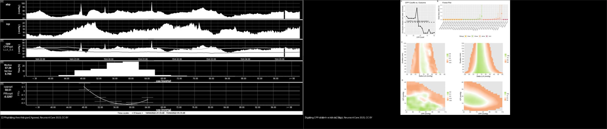
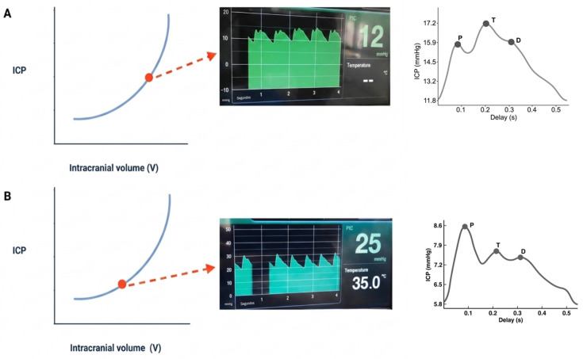
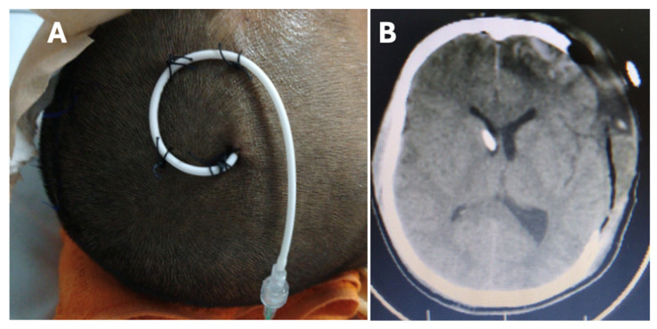
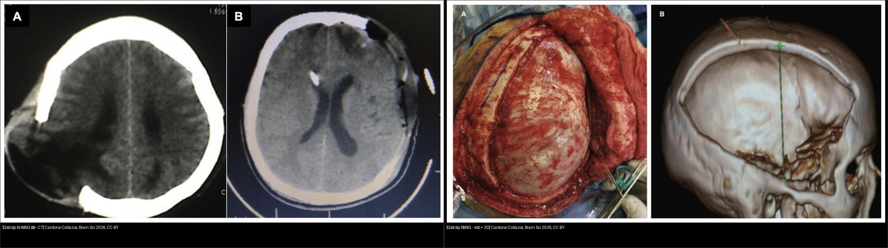
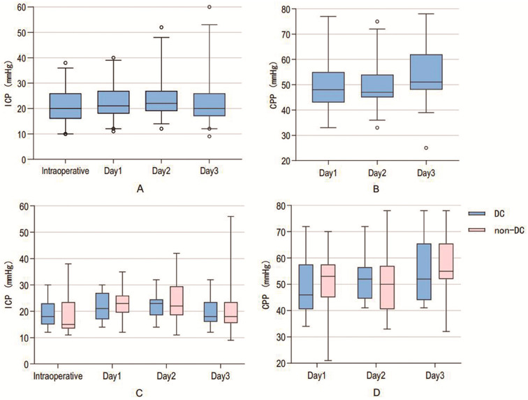
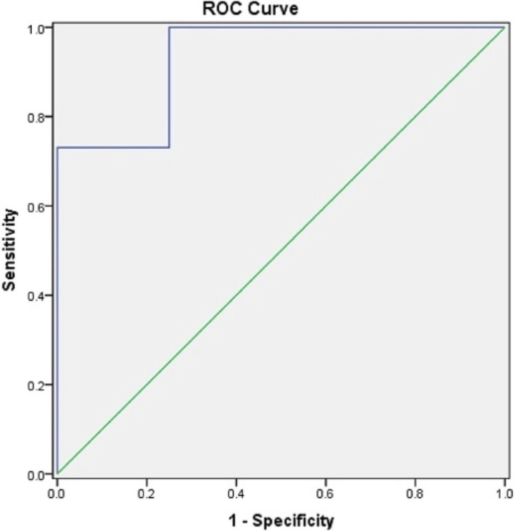
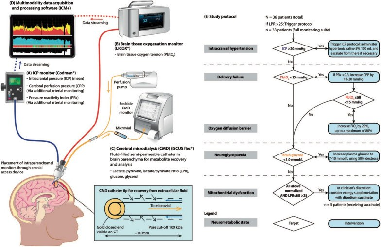

234 — Tăng áp lực nội sọ (ICP) & theo dõi đa phương thức ở trẻ chấn thương sọ não: EVD, dung dịch ưu trương, mở sọ giải ép, ngưỡng CPP theo tuổi / Intracranial pressure monitoring & multimodal neuromonitoring in pediatric TBI
Tags: pattern:tang-ap-luc-noi-so pattern:thoat-vi-nao vung:nao-nhi score:ICP-CPP score:GCS protocol:EVD protocol:do-ICP protocol:MRI-nao-nhi protocol:sieu-am-ONSD
Mức chắc chắn (certainty): tổng hợp y văn (literature synthesis) — nhóm tự biên từ y văn mở có số liệu (KidsBrainIT, STARSHIP, hướng dẫn PBTF 2019 qua bài tổng quan, RCT/đoàn hệ dung dịch ưu trương, đoàn hệ giải ép sọ), ghép 4 cửa Argon. Ca trong quiz là ca nguyên văn (verbatim case) chép đúng mô tả hình ảnh gốc.
1. Tổng quan bệnh học – cơ chế hình ảnh
- Áp lực nội sọ (intracranial pressure, ICP) là áp lực trong khoang sọ kín. Bình thường ở trẻ ≈ 5–10 mmHg (nhũ nhi thấp hơn), ngưỡng can thiệp 20 mmHg kéo dài > 5 phút (hướng dẫn PBTF 2019 dùng cho trẻ). Áp lực tưới máu não (cerebral perfusion pressure, CPP) = MAP − ICP, mục tiêu tối thiểu 40–50 mmHg (nhũ nhi ~40, trẻ lớn 50–60) — hạ huyết áp nguy hiểm hơn tăng ICP đơn thuần vì tổn thương não thứ phát do thiếu máu.
- TẠI SAO tăng thể tích lại làm ICP tăng theo cấp số nhân: khoang sọ là hộp cứng; ban đầu dịch não tủy (CSF) và máu tĩnh mạch bị đẩy ra (dự trữ bù trừ, compliance cao) → ICP gần như không đổi. Khi cạn dự trữ, mỗi mL thêm vào làm ICP tăng vọt (đường cong thể tích–áp lực hình chữ J). Vì vậy ICP 18 mmHg có thể đã là "cạn bù trừ", còn ICP 25 mmHg ở người còn dự trữ có thể chịu được lâu hơn → phải đọc HÌNH DẠNG SÓNG, không chỉ con số.
- TẠI SAO đọc được trên CT: máu tụ cấp 40–70 HU, nhu mô 30–40 HU, dịch não tủy 0–15 HU, phù làm giảm 2–3 HU/giờ; dấu gián tiếp của tăng ICP là xóa rãnh/bể nền, xẹp não thất, lệch đường giữa (midline shift), thoát vị. CT bình thường KHÔNG loại trừ tăng ICP (nhất là tăng ICP "sóng" ở trẻ có compliance kém).
- TẠI SAO cần theo dõi đa phương thức (multimodal): mỗi dụng cụ đo một mặt khác nhau — EVD đo ICP toàn cục + dẫn lưu CSF trị liệu; đầu dò nhu mô đo ICP khu trú, ít biến chứng hơn nhưng không dẫn lưu được; PbtO₂ đo oxy mô não; siêu âm đường kính bao thần kinh thị (ONSD) đo không xâm lấn; pupillometry tự động (NPi), NIRS, TCD, EEG liên tục; PRx/CPPopt đo tự điều hòa.
- Ngưỡng định lượng nằm lòng:
- ICP > 20 mmHg liên quan kết cục xấu ở trẻ; vùng CPP "an toàn" 56–89 mmHg khi còn tự điều hòa và ICP < 20 mmHg**; **ICP > 20 mmHg làm xấu kết cục BẤT KỂ mức CPP (Kempen et al., Neurocrit Care 2025, PMC12819434 — KidsBrainIT, n = 104, GOS 6 tháng).
- CPP ≤ 50 mmHg là ngưỡng gây hại rõ; trên 90 mmHg chỉ có xu hướng xấu (Bögli et al., Neurocrit Care 2025, PMC12819438 — STARSHIP, n = 135). Không tìm thấy "trần" tự điều hòa rõ — PRx chỉ tăng > 0,2 khi CPP > 100 mmHg.
- Giải ép sọ ở trẻ: tử vong 17,0% (mổ) vs 26,4% (không mổ), p = 0,239 — không giảm tử vong nhưng PCPC lúc ra viện tốt hơn (p = 0,029), 3 tháng chỉ xu hướng (p = 0,057) (Xu et al., Children 2025, PMC12562694 — 53 cặp ghép).
- Mổ giải ép "sớm ≤ 2 giờ" có tử vong CAO hơn (37,5% vs 15,8%; aOR 2,89; KTC 1,43–5,85) vì chọn bệnh nặng hơn — nhưng người sống sót thở máy và nằm viện NGẮN hơn (Hojeij et al., Sci Rep 2026, PMC12820072 — 598 ca/9.495 sTBI).
- Dung dịch ưu trương: 3% NaCl vs 20% mannitol — tử vong 7,1% vs 11,0%, KHÁC BIỆT KHÔNG có ý nghĩa sau hiệu chỉnh (Chong et al., JAMA Netw Open 2025, PMC11897838 — 445 trẻ, 28 PICU).
- PbtO₂: mục tiêu > 10 mmHg (mức chứng cứ III); thiếu oxy mô < 5 mmHg > 1 giờ hoặc < 10 mmHg > 2 giờ liên quan kết cục xấu (Agrawal et al., Neurocrit Care 2024, PMC10861621 — tổng quan).
- ONSD ở trẻ có não úng thủy: ngưỡng 5,5 mm dự báo ICP ≥ 20 mmHg, Se 100%, Sp 75%, PPV 95%, AUC 0,934, tương quan r = 0,879 (Dhawal et al., Cureus 2025, PMC12477087 — 52 trẻ 2 tháng–10 tuổi).
- Chỉ 21,4% trẻ sTBI được đặt monitor ICP (151/706); trong số đó 49,7% có ICP tăng; tử vong 13,2% (không monitor) vs 8,0% (ICP tăng) vs 4,0% (ICP bình thường), p = 0,037 (Yeo et al., Neurotrauma Rep 2025, PMC12528845).
2. Mẫu hình + chẩn đoán phân biệt theo cơ chế (Gamut)
- Tăng ICP do khối choán chỗ (mass lesion): máu tụ ngoài/dưới màng cứng, đụng dập lớn, u, áp-xe — lệch đường giữa + xẹp não thất bên cùng bên + xóa bể nền. Xử trí: lấy khối trước, giải ép chỉ hỗ trợ.
- Tăng ICP do phù lan tỏa (diffuse swelling): sau ngạt/thiếu oxy, hội chứng đáp ứng viêm toàn thân, DKA — xóa rãnh hai bên, não thất khe, mất phân biệt xám–trắng; ICP tăng nhưng không có khối khu trú.
- Tăng ICP do ứ dịch não tủy (hydrocephalus): giãn não thất, temporal horn > 2 mm, bể nền mất; sau xuất huyết não thất, viêm màng não, u hố sau.
- Tăng ICP do ứ máu tĩnh mạch: huyết khối xoang dọc trên, chèn ép tĩnh mạch cảnh — giãn não thất + phù lan tỏa, cần MRV.
- Tăng ICP "giả" (pseudotumor/idiopathic intracranial hypertension): não thất bình thường hoặc khe, ONSD giãn, đĩa thị phù, không có khối — điều trị nội khoa, không giải ép.
- Tăng ICP do tụt MAP (không phải do ICP): CPP thấp nhưng ICP bình thường — điều trị huyết áp trước, đây là cạm bẫy hay gặp khi chỉ nhìn ICP.
- Mnemonic "M-V-C-V": Mass, Volume (edema), CSF (hydrocephalus), Venous (sinus thrombosis) — cộng thêm Pressure giả (pseudotumor).
3. Bảng so sánh phân biệt (ma trận đối chiếu)
| Thực thể (entity) | Hình ảnh / dữ liệu điển hình | Chốt vào (rule-in) | Chốt loại (rule-out) | Gợi ý xác nhận |
|---|---|---|---|---|
| Tăng ICP do khối choán chỗ | Máu tụ/u/áp-xe + lệch đường giữa, xẹp não thất cùng bên | Khối khu trú + lệch đường giữa > 5 mm | Không khối + phù lan tỏa hai bên → thể phù | CT ≤ 1 mm; đo thể tích khối |
| Phù não lan tỏa | Xóa rãnh/bể hai bên, não thất khe, mất phân biệt xám–trắng | Xóa bể nền + não thất khe hai bên | Còn bể, không lệch → ICP có thể bình thường | CT lặp lại 6–12 giờ; ICP thật |
| Não úng thủy | Giãn não thất, sừng thời > 2 mm, bể nền mất | Giãn não thất + sừng thời giãn | Não thất bình thường → không ứ CSF | Siêu âm thóp (nhũ nhi), MRI |
| Huyết khối xoang tĩnh mạch | Giãn não thất + phù; khuyết thuốc xoang trên CTV/MRV | Khuyết thuốc xoang dọc trên/ngang | Xoang thông tốt → loại trừ | CTV/MRV; D-dimer |
| Tăng ICP không xâm lấn (ONSD) | ONSD ≥ 5,5 mm (trẻ 2–10 tuổi), giãn bao thần kinh thị | ONSD ≥ 5,5 mm + ICP ≥ 20 mmHg (Se 100%) | ONSD bình thường KHÔNG loại trừ ICP tăng từng cơn | Siêu âm mắt 2 bên, 3 mm sau củng mạc |
| Tăng ICP "giả" (IIH) | Não thất khe/bình thường, đĩa thị phù, ONSD giãn, không khối | Đĩa thị phù hai bên + não thất bình thường + không khối | Có khối/giãn não thất → nguyên nhân thực thể | MRI + MRV + chọc dò dịch não tủy |

Trái: CPPopt tính động theo thời gian thực — đường CPPopt và giới hạn tự điều hòa dưới (LLA) thay đổi liên tục trong 8 giờ ghi (Agrawal S et al., Neurocrit Care 2023, CC BY 4.0). Phải: ngưỡng CPP cố định so với kết cục — chỉ vùng CPP thấp cho thấy liên quan rõ, trên 90 mmHg chỉ là xu hướng (Bögli SY et al., Neurocrit Care 2025, CC BY 4.0).4. Protocol theo dõi + phân tầng + xử trí
4.1 Chỉ định đặt monitor ICP (không có "một ngưỡng cho mọi trẻ")
- GCS ≤ 8 sau hồi sức + CT bất thường (máu tụ, đụng dập, phù, xẹp não thất) → đặt monitor.
- GCS ≤ 8 + CT bình thường nhưng có yếu tố nguy cơ (tụt huyết áp, thiếu oxy, cơ chế năng lượng cao, co giật) → cân nhắc.
- Không đặt thường quy khi GCS 9–15 và CT bình thường; nhưng theo dõi sát 24–48 giờ vì phù tiến triển muộn.
- Lưu ý thực hành: chỉ 21,4% trẻ sTBI trong đoàn hệ đa quốc gia được đặt monitor — mô hình lâm sàng dự báo ICP tăng chỉ đạt AUC 73,7%, Se 56%, không đủ để thay thế monitor (Yeo 2025).
4.2 Chọn dụng cụ
| Dụng cụ | Đo gì | Ưu | Nhược / biến chứng |
|---|---|---|---|
| EVD (dẫn lưu não thất ngoài) | ICP toàn cục + dẫn lưu CSF | Chuẩn vàng; vừa đo vừa điều trị; hiệu chuẩn in vivo | Khó đặt khi não thất khe; nhiễm khuẩn 3–9% (aSAH người lớn 12–14%/EVD); chảy máu; đọc ngắt quãng |
| Đầu dò nhu mô | ICP khu trú | Dễ đặt, ít nhiễm khuẩn hơn | Không dẫn lưu được; trôi số 5–7 ngày; sai lệch theo vị trí đầu dò |
| PbtO₂ | Oxy mô não | Phát hiện thiếu oxy dù ICP bình thường | Xâm lấn, không có trị số chuẩn ở trẻ |
| Microdialysis | Glucose, lactate/pyruvate | Phát hiện khủng hoảng chuyển hóa | Chỉ trong nghiên cứu ở trẻ |
| ONSD (siêu âm) | ICP gián tiếp | Không xâm lấn, tại giường, lặp lại nhanh | Phụ thuộc người làm; ONSD thay đổi theo tuổi; không thay thế monitor |
| Pupillometry (NPi) | Phản xạ thân não | Khách quan, dự báo ICP tăng và đáp ứng osmotherapy | Cần thêm dữ liệu trẻ em |
| TCD / NIRS | Vận tốc dòng / oxy vùng | Chỉ số tự điều hòa không xâm lấn | Nhiễu do máu tụ, xương dày |
4.3 Ngưỡng và mục tiêu
- ICP: điều trị khi > 20 mmHg kéo dài > 5 phút; ICP > 20 mmHg làm xấu kết cục bất kể CPP (KidsBrainIT).
- CPP: tối thiểu 40–50 mmHg; vùng an toàn 56–89 mmHg khi tự điều hòa còn tốt; CPP ≤ 50 mmHg có hại; > 90 mmHg không có lợi rõ và có xu hướng xấu.
- CPPopt/PRx: PRx là hệ số tương quan trượt 5 phút giữa MAP và ICP, cập nhật mỗi phút; PRx âm/0 = tự điều hòa tốt; PRx dương = tự điều hòa mất. CPPopt là CPP tại đáy chữ U của PRx — thay đổi theo thời gian, không phải hằng số.
- PbtO₂: mục tiêu > 10 mmHg (mức III); cân nhắc ngưỡng cao hơn (20 mmHg) vì dưới 20 mmHg thường được coi là thiếu máu mô.
- Nhiệt độ, Na, glucose, CO₂: tránh hạ Na < 135 mmol/L, đường huyết < 4 mmol/L, PaCO₂ thấp kéo dài (gây co mạch).
4.4 Xử trí theo bậc (khi ICP tăng)
- Tư thế: đầu cao 30°, cổ thẳng (không xoay), nới đai cổ.
- An thần/giảm đau đủ sâu, tránh tụt huyết áp; kiểm soát co giật (EEG nếu hôn mê).
- Dẫn lưu CSF qua EVD (nếu có) — giảm ICP nhanh, nhưng không dùng như biện pháp duy nhất ở giai đoạn cạn bù trừ.
- Dung dịch ưu trương: 3% NaCl (bolus 3–5 mL/kg, hoặc truyền liên tục) hoặc 20% mannitol 0,25–1 g/kg; hiệu quả tương đương về tử vong/kết cục (Chong 2025); Na mục tiêu 145–155 mmol/L; theo dõi Na, osmolality, chức năng thận.
- Tăng thông khí ngắn hạn (PaCO₂ 30–35 mmHg) chỉ khi thoát vị cấp, không kéo dài.
- Mở sọ giải ép (decompressive craniectomy): khi ICP kháng trị với điều trị nội khoa tối ưu; vạt xương trước–thái dương–đỉnh ≥ 12–15 cm đường kính trước–sau, mở màng cứng hình sao/chữ C, vá màng cứng không căng; giải ép nửa vời → thoát vị qua vết mổ ("fungus cerebri"), nhồi máu vỏ não (Cardona-Collazos et al., Brain Sci 2026, PMC13204066).
- Kiểm soát nguyên nhân: lấy máu tụ, dẫn lưu não thất, xử trí huyết khối xoang.
4.5 Flowchart
flowchart TD
A["Trẻ sTBI, GCS ≤ 8 sau hồi sức"] --> B{"CT bất thường<br/>hoặc yếu tố nguy cơ?"}
B -->|Có| C["Đặt monitor ICP<br/>(EVD nếu não thất đủ rộng)"]
B -->|Không| D["Theo dõi sát 24–48 giờ<br/>+ ONSD/pupillometry"]
C --> E{"ICP > 20 mmHg<br/>> 5 phút?"}
E -->|Không| F["Duy trì CPP 40–50<br/>theo tuổi, tránh tụt HA"]
E -->|Có| G["Bậc 1: đầu 30°, an thần,<br/>dẫn lưu CSF, kiểm soát co giật"]
G --> H{"Còn tăng?"}
H -->|Có| I["Bậc 2: 3% NaCl hoặc mannitol<br/>Na đích 145–155"]
I --> J{"Còn tăng / thoát vị?"}
J -->|Có| K["Bậc 3: tăng thông khí ngắn<br/>+ mở sọ giải ép ≥ 12–15 cm"]
J -->|Không| L["Theo dõi PRx/CPPopt,<br/>PbtO₂ nếu có"]
K --> L
F --> L
5. Biến thể bình thường và cạm bẫy
- Cạm bẫy #1 — "ICP 18 mmHg là an toàn". Trên đường cong thể tích–áp lực, ICP "bình thường" nhưng sóng P2 > P1 đã là cạn dự trữ bù trừ — ca trong hình của Cardona-Collazos có ICP 12 mmHg nhưng P2 > P1, và ca khác ICP 25 mmHg nhưng sóng ba pha bình thường. Đọc hình dạng sóng (P1 xung động, P2 sóng thủy triều, P3 sóng đôi) cùng con số.
- Cạm bẫy #2 — tối ưu ICP mà bỏ CPP. Giảm ICP bằng cách hạ huyết áp hoặc tăng thông khí mạnh có thể làm CPP tụt < 40 mmHg → nhồi máu thêm. Luôn tính CPP = MAP − ICP trước và sau mỗi can thiệp.
- Cạm bẫy #3 — "mổ giải ép sớm luôn tốt hơn". Dữ liệu toàn quốc cho thấy nhóm mổ ≤ 2 giờ có tử vong gấp ~2,9 lần — vì đó là nhóm bệnh nặng nhất (confounding by indication). Không dùng số này để trì hoãn mổ ở bệnh nhân đang thoát vị.
- Cạm bẫy #4 — giải ép quá hẹp. Vạt xương < 12 cm không đủ tăng thể tích → thoát vị qua vết mổ, nhồi máu vỏ não, tụ dịch dưới màng cứng; mở màng cứng đường thẳng nhỏ cũng hạn chế giãn não.
- Cạm bẫy #5 — tin tuyệt đối ONSD. ONSD bình thường không loại trừ tăng ICP từng cơn; ONSD khác theo tuổi (trung bình 4,31 mm < 2 tuổi** vs **5,35 mm > 2 tuổi) và phụ thuộc người đo; ngưỡng 5,5 mm chỉ áp dụng cho nhóm nghiên cứu (trẻ 2–10 tuổi có não úng thủy).
- Cạm bẫy #6 — EVD "đặt rồi để đó". Nhiễm khuẩn EVD 3–9% (người lớn aSAH 12–14%/EVD), tăng theo số lần đặt lại và tần suất lấy dịch não tủy; rút sớm khi không còn chỉ định. Rút nhanh vs rút từ từ: tỉ lệ đặt shunt não thất–phúc mạc 32,1% vs 28,1% (RR 0,85; p = 0,56), nhiễm khuẩn tương đương, nhưng rút nhanh giảm 2,7 ngày ICU và 3,6 ngày nằm viện (Ebel et al., Neurocrit Care 2023, PMC10499951).
- Cạm bẫy #7 — bỏ sót thương tổn ngoài sọ. Trong 706 trẻ sTBI, 13,2% tử vong ở nhóm KHÔNG được monitor — một phần vì bỏ sót bệnh nặng hoặc do chọn lọc; đừng dùng "không đặt monitor" như dấu hiệu "bệnh nhẹ".
- Biến thể bình thường: giãn khoang dưới nhện do teo não (người lớn, không phải tăng ICP); não thất hơi giãn ở trẻ sinh non; sóng ICP có P1 cao đơn thuần (không phải cạn bù trừ).
6. Tự lượng giá — Blind Quiz ngay trên trang tĩnh
Ca 1 — Trẻ sTBI, đã mở sọ giải ép; đầu dò ICP ghi 12 mmHg nhưng sóng có P2 > P1.

- Câu hỏi: Con số 12 mmHg có nghĩa là "an toàn" không? Sóng P2 > P1 nói gì về dự trữ bù trừ?
Bấm để hiện đáp án (findings + chẩn đoán)
- Findings: (A) ICP 12 mmHg nhưng P2 > P1 → điểm nằm cao trên đường cong thể tích–áp lực (đã cạn dự trữ); (B) ICP 25 mmHg nhưng sóng ba pha P1 > P2 → còn dự trữ.
- Kết luận: số ICP một mình không đủ; hình dạng sóng phản ánh compliance. P1 = xung động, P2 = thủy triều, P3 = đôi.
- Xử trí: theo dõi sát, tránh thêm thể tích (dịch, PaCO₂), cân nhắc can thiệp sớm trước khi ICP vượt 20 mmHg.
- Nguồn: Cardona-Collazos S et al., Brain Sci 2026, PMC13204066, CC BY 4.0 (Fig 1, phỏng theo tài liệu [16]).
Ca 2 — Trẻ 8 tuổi, EVD vừa đặt; kiểm tra vị trí trên CT.

- Câu hỏi: Đầu catheter nên nằm ở đâu? Điểm vào chuẩn là gì? Biến chứng nhiễm khuẩn tăng theo yếu tố nào?
Bấm để hiện đáp án
- Findings: (A) catheter luồn dưới da, cố định bằng chỉ, ra da vùng trán, nối hệ kín; (B) CT — catheter đi qua điểm Kocher (trước 10–11 cm trên đường giữa, 3 cm ra ngoài đường giữa), đầu nằm trong sừng trán não thất bên.
- Chốt: đầu catheter trong não thất + không đi qua nhu mô quá dài; hệ kín, không rò.
- Nhiễm khuẩn: 3–9%; tăng theo thời gian lưu, số lần đặt lại, tần suất lấy dịch; rút nhanh an toàn (giảm 2,7 ngày ICU).
- Nguồn: Cardona-Collazos S et al., Brain Sci 2026, PMC13204066, CC BY 4.0 (Fig 9).
Ca 3 — Cùng bệnh nhân sau giải ép: một bên giải ép đủ, một bên không đủ.

- Câu hỏi: Dấu hiệu nào cho thấy giải ép không đủ? Kích thước vạt xương tối thiểu?
Bấm để hiện đáp án
- Findings: (trái) thoát vị não qua vết mổ ("fungus cerebri") + nhồi máu vỏ não ở bệnh nhân mở sọ hẹp; (phải) vạt xương trước–thái dương–đỉnh rộng ≥ 12–15 cm + mở màng cứng hình sao, giải ép đủ cả nền trán và sàn thái dương.
- Chốt: giải ép nửa vời = biến chứng (nhồi máu, tụ dịch dưới màng cứng, thoát vị qua vết mổ).
- Kỹ thuật: vá màng cứng không căng, đủ rộng để não giãn ra ngoài.
- Nguồn: Cardona-Collazos S et al., Brain Sci 2026, PMC13204066, CC BY 4.0 (Fig 4, 5).
Ca 4 — Trẻ sTBI được mổ giải ép; biểu đồ ICP và CPP trước/sau mổ.

- Câu hỏi: Giải ép có làm giảm tử vong không? Lợi ích nào được chứng minh?
Bấm để hiện đáp án
- Findings: ICP giảm và CPP tăng sau mổ (A, B); so sánh DC vs không DC (C, D) cho thấy ICP/CPP tương đương giữa hai nhóm.
- Kết cục (n = 53 cặp ghép): tử vong 17,0% vs 26,4%, p = 0,239 — không giảm tử vong; PCPC lúc ra viện tốt hơn (p = 0,029); 3 tháng chỉ xu hướng (p = 0,057).
- Bài học: giải ép là biện pháp cứu não, không phải cứu sống ngay; tư vấn gia đình cần nói rõ.
- Nguồn: Xu J et al., Children 2025, PMC12562694, CC BY 4.0 (Fig 2).
Ca 5 — Trẻ 5 tuổi nghi tăng ICP, không có monitor xâm lấn; siêu âm mắt.

- Câu hỏi: Ngưỡng ONSD nào được dùng? Độ nhạy/độ đặc hiệu? Có thay thế được monitor không?
Bấm để hiện đáp án
- Findings: ROC — ngưỡng 5,5 mm dự báo ICP ≥ 20 mmHg với Se 100%, Sp 75%, PPV 95%, AUC 0,934; tương quan r = 0,879 với ICP xâm lấn.
- Bối cảnh: 52 trẻ 2 tháng–10 tuổi có não úng thủy; ONSD trước mổ 5,75 ± 1,6 mm giảm còn 4,3 ± 0,89 mm sau mổ.
- Cạm bẫy: ONSD thay đổi theo tuổi (4,31 mm < 2 tuổi** vs **5,35 mm > 2 tuổi) và phụ thuộc người đo → không thay thế monitor khi có chỉ định.
- Nguồn: Dhawal M et al., Cureus 2025, PMC12477087, CC BY 4.0 (Fig 3).
Ca 6 — Trẻ sTBI, đặt 3 đầu dò nhu mô; phát hiện ICP bình thường nhưng PbtO₂ thấp.

- Câu hỏi: Vì sao theo dõi PbtO₂ khi ICP đã bình thường? Ngưỡng PbtO₂ mục tiêu? Khi nào tăng FiO₂?
Bấm để hiện đáp án
- Findings: sơ đồ đặt 3 đầu dò qua một cổng sọ (ICP, PbtO₂, microdialysis) + thuật toán: ICP > 20 → 3% NaCl 5 mL/100 mL; PbtO₂ < 15 mmHg → tăng FiO₂ 10–20% (tối đa 80%); glucose não < 0,1 mmol/L → tăng glucose**; **LPR > 25 → succinate.
- Vì sao: thiếu oxy mô có thể xảy ra dù ICP bình thường; PbtO₂ < 5 mmHg > 1 giờ hoặc < 10 mmHg > 2 giờ liên quan kết cục xấu.
- Mục tiêu: PbtO₂ > 10 mmHg (mức III); nhiều trung tâm dùng > 20 mmHg.
- Nguồn: Agrawal S et al., Neurocrit Care 2024, PMC10861621, CC BY 4.0 (Fig 2).
Bài liên quan chéo
- 200 – Tổng quan hệ Thần kinh
- 224 – Chấn thương sọ não ở trẻ (Marshall/Rotterdam, DAI, EDH vs SDH)
- 218 – Thoát vị não & úng thủy
- 216 – Dị dạng mạch & huyết khối xoang (CVST)
- 201 – Protocol sọ não
- 650 – Siêu âm thóp sơ sinh & xuất huyết vùng mầm
Ảnh
- Tên file:
234_slug_Modality_SourceID.jpg. Nguồn + giấy phép từng ảnh trongimages/CREDITS.md. - Toàn bộ ảnh dùng ở đây là CC BY 4.0 → được phép ghép; ảnh ghép letterbox giữ nguyên tỉ lệ.
- Không có ảnh nào phải dẫn link vì paywall.
Không dùng để chẩn đoán độc lập khi chưa có người hướng dẫn.